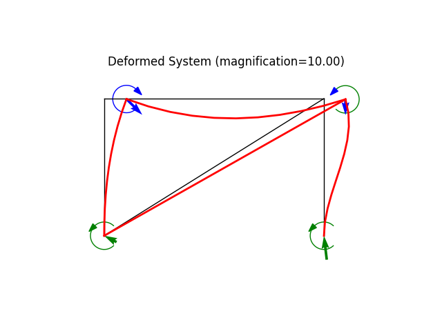

Note
Go to the end to download the full example code
Braced building frame
modeled using a 2D frame element for the main structure and a truss element for the brace
Author: Peter Mackenzie-Helnwein
import matplotlib.pyplot as plt
from femedu.examples.Example import *
from femedu.domain import *
from femedu.solver.NewtonRaphsonSolver import *
from femedu.elements.finite.Truss import *
from femedu.elements.finite.Frame2D import *
from femedu.materials.FiberMaterial import *
from femedu.materials.ElasticSection import *
class ExampleMixed01(Example):
def problem(self):
# initialize a system model
B = 80.
H = 50.
E = 29000.0 # steel MOE
A = 20.0 # frame area
I = 10.0 # frame moment of inertia
Ab = 1.0 # brace area
w = 0.50 # uniform load on floor beam
Ph = 20.00 # additional horizontal load per floor
# ========== setting global parameters ==============
target_load_level = 10
max_steps = 10
load_levels = np.linspace(0, target_load_level, max_steps)
# ========= build your structural model =============
model = System()
model.setSolver(NewtonRaphsonSolver())
X10 = Node(0.0, 0.0)
X11 = Node(0.0, H)
X20 = Node(B, 0.0)
X21 = Node(B, H)
model.addNode(X10,X11)
model.addNode(X20,X21)
# columns
frameParams = {'E': E, 'A': A, 'I': I}
C11 = Frame2D(X10, X11, ElasticSection(frameParams))
C21 = Frame2D(X20, X21, ElasticSection(frameParams))
model.addElement(C11,C21)
# floors
params = {'E': E, 'A': A, 'I': 8*I}
F11 = Frame2D(X11, X21, ElasticSection(params))
model.addElement(F11)
# braces
braceParams = {'E': E, 'A': Ab}
model += Truss(X10, X21, FiberMaterial(braceParams))
# fixities
X10.fixDOF('ux','uy','rz') # fixed
X20.fixDOF('ux','uy','rz') # fixed
# reference load
#Pcr = np.pi**2 * EI / L**2
model.resetLoad() # size load vector and initialize
#model.addLoad(Xn, -Pcr, dof=0) # add a horizontal force (first dof only) ; remember C-style indexing: 0,1,...,(n-1)
# floor loading as distributed loads ...
F11.setDistLoad(-w)
# wind load ...
X11.addLoad([Ph],['ux']) # horizontal load
# show model information
model.report()
print("\n==== perform the analysis ===\n")
# * apply the load in multiple smaller load steps
# set up data recorder
model.initRecorder()
# initialize the analysis:
model.resetDisplacements() # set U to all zeros
model.setLoadFactor(0.0) # define a known equilibrium solution
model.plot(factor=0.0, title="undeformed system", filename="mixed01_undeformed.png")
model.startRecorder()
# solve for all load_levels
for loadfactor in load_levels:
# define node X2 as the controled node; downward direction is prescribed:
model.setLoadFactor(loadfactor)
model.solve(verbose=True)
model.recordThisStep()
print("\n=== next load level ===\n")
#
# ==== create some nice plots ===
#
model.report()
model.plot(factor=10.0, filename="mixed01_deformed.png")
model.beamValuePlot("F", filename="mixed01_force.png")
model.beamValuePlot("V", filename="mixed01_shear.png")
model.beamValuePlot("M", filename="mixed01_moment.png")
Run the example by creating an instance of the problem and executing it by calling Example.run()
if __name__ == "__main__":
ex = ExampleMixed01()
ex.run()
- 


System Analysis Report
=======================
Nodes:
---------------------
Node_3815:
x: [0. 0.]
fix: ['ux', 'uy', 'rz']
u: None
Node_3816:
x: [ 0. 50.]
P: [20. 0. 0.]
u: None
Node_3817:
x: [80. 0.]
fix: ['ux', 'uy', 'rz']
u: None
Node_3818:
x: [80. 50.]
u: None
Elements:
---------------------
Frame2D_6326: nodes ( Node_3815 Node_3816 )
material: ElasticSection
internal forces: f0=0.00 V0=0.00 M0=0.00 fl=0.00 Vl=0.00 Ml=0.00 Pw=0.00 Mw=0.00
Frame2D_6327: nodes ( Node_3817 Node_3818 )
material: ElasticSection
internal forces: f0=0.00 V0=0.00 M0=0.00 fl=0.00 Vl=0.00 Ml=0.00 Pw=0.00 Mw=0.00
Frame2D_6328: nodes ( Node_3816 Node_3818 )
material: ElasticSection
internal forces: f0=0.00 V0=0.00 M0=0.00 fl=0.00 Vl=0.00 Ml=0.00 Pw=0.00 Mw=0.00
Truss: Node_3815 to Node_3818:
material properties: FiberMaterial(Material)({'E': 29000.0, 'A': 1.0, 'nu': 0.0, 'fy': 1e+30}) strain:0.0 stress:{'xx': 0.0, 'yy': 0.0, 'zz': 0.0, 'xy': 0.0}
internal force: 0.0
==== perform the analysis ===
/usr/local/lib/python3.11/site-packages/matplotlib/quiver.py:632: RuntimeWarning: Mean of empty slice.
amean = a.mean()
/usr/local/lib/python3.11/site-packages/numpy/core/_methods.py:129: RuntimeWarning: invalid value encountered in scalar divide
ret = ret.dtype.type(ret / rcount)
norm of the out-of-balance force: 0.0000e+00
+
=== next load level ===
norm of the out-of-balance force: 4.2079e+02
norm of the out-of-balance force: 2.6164e+00
norm of the out-of-balance force: 3.8196e-03
norm of the out-of-balance force: 2.1116e-06
norm of the out-of-balance force: 2.4046e-09
+
=== next load level ===
norm of the out-of-balance force: 4.2079e+02
norm of the out-of-balance force: 5.2938e+00
norm of the out-of-balance force: 1.6230e-02
norm of the out-of-balance force: 1.8540e-05
norm of the out-of-balance force: 4.5230e-08
+
=== next load level ===
norm of the out-of-balance force: 4.2079e+02
norm of the out-of-balance force: 8.0343e+00
norm of the out-of-balance force: 3.7783e-02
norm of the out-of-balance force: 6.6350e-05
norm of the out-of-balance force: 2.4887e-07
+
=== next load level ===
norm of the out-of-balance force: 4.2079e+02
norm of the out-of-balance force: 1.0840e+01
norm of the out-of-balance force: 6.9061e-02
norm of the out-of-balance force: 1.6541e-04
norm of the out-of-balance force: 8.4113e-07
+
=== next load level ===
norm of the out-of-balance force: 4.2079e+02
norm of the out-of-balance force: 1.3714e+01
norm of the out-of-balance force: 1.1068e-01
norm of the out-of-balance force: 3.3876e-04
norm of the out-of-balance force: 2.1826e-06
norm of the out-of-balance force: 1.0892e-08
+
=== next load level ===
norm of the out-of-balance force: 4.2079e+02
norm of the out-of-balance force: 1.6658e+01
norm of the out-of-balance force: 1.6331e-01
norm of the out-of-balance force: 6.1296e-04
norm of the out-of-balance force: 4.7969e-06
norm of the out-of-balance force: 2.9011e-08
+
=== next load level ===
norm of the out-of-balance force: 4.2079e+02
norm of the out-of-balance force: 1.9675e+01
norm of the out-of-balance force: 2.2764e-01
norm of the out-of-balance force: 1.0186e-03
norm of the out-of-balance force: 9.4058e-06
norm of the out-of-balance force: 6.7100e-08
+
=== next load level ===
norm of the out-of-balance force: 4.2079e+02
norm of the out-of-balance force: 2.2768e+01
norm of the out-of-balance force: 3.0444e-01
norm of the out-of-balance force: 1.5908e-03
norm of the out-of-balance force: 1.6971e-05
norm of the out-of-balance force: 1.3989e-07
+
=== next load level ===
norm of the out-of-balance force: 4.2079e+02
norm of the out-of-balance force: 2.5940e+01
norm of the out-of-balance force: 3.9449e-01
norm of the out-of-balance force: 2.3697e-03
norm of the out-of-balance force: 2.8743e-05
norm of the out-of-balance force: 2.6942e-07
+
=== next load level ===
System Analysis Report
=======================
Nodes:
---------------------
Node_3815:
x: [0. 0.]
fix: ['ux', 'uy', 'rz']
u: [0. 0. 0.]
Node_3816:
x: [ 0. 50.]
P: [20. 0. 0.]
u: [ 0.81143807 -0.01625057 -0.03775122]
Node_3817:
x: [80. 0.]
fix: ['ux', 'uy', 'rz']
u: [0. 0. 0.]
Node_3818:
x: [80. 50.]
u: [ 0.78293564 -0.02726958 0.03215376]
Elements:
---------------------
Frame2D_6326: nodes ( Node_3815 Node_3816 )
material: ElasticSection
internal forces: f0=-188.51 V0=-6.64 M0=-98.88 fl=-188.51 Vl=-6.64 Ml=-278.06 Pw=0.00 Mw=0.00
Frame2D_6327: nodes ( Node_3817 Node_3818 )
material: ElasticSection
internal forces: f0=-316.33 V0=37.17 M0=-911.14 fl=-316.33 Vl=37.17 Ml=1195.25 Pw=0.00 Mw=0.00
Frame2D_6328: nodes ( Node_3816 Node_3818 )
material: ElasticSection
internal forces: f0=-206.64 V0=-11.49 M0=2388.61 fl=-206.64 Vl=-11.49 Ml=1471.42 Pw=-200.00 Mw=-2666.67
Truss: Node_3815 to Node_3818:
material properties: FiberMaterial(Material)({'E': 29000.0, 'A': 1.0, 'nu': 0.0, 'fy': 1e+30}) strain:0.006871468961325107 stress:{'xx': 199.27259987842808, 'yy': 0.0, 'zz': 0.0, 'xy': 0.0}
internal force: 199.27259987842808
Total running time of the script: (0 minutes 0.744 seconds)